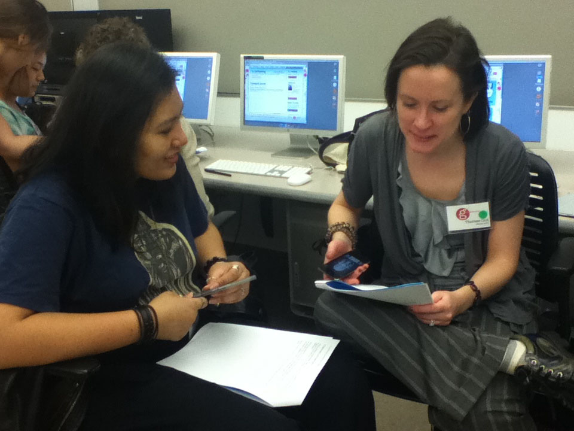
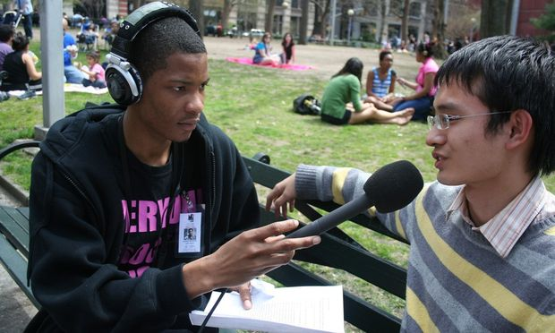

Section 3. Participating on the Web
Final Project
Story of Us
Made by Mozilla for Clubs, based on a project by WYNC Radio Rookies.
Learners will learn how to tell their Story of Self, use it to reflect on what they have learned, the role of learning socially, and how they want to learn and participate on the web and with their community going forward. And using and sharing files in open, web-friendly formats when appropriate
1 - 2 hours
-
Preparation
Do the activity on your own to become familiar with it.
Print the storytelling and recording tips, if needed.
Complete the pre-activity questionnaire, and have your learners complete their pre-activity questionnaires.
-
10
minUnderstand your Story of Self
Introduce the session by saying that we will build on what we've learned so far and use web storytelling technqiues to share our own journey and reflect where we would like to go from here.
A good "Story of Self" has three parts:
- Me. Start your story with who you are. This helps your audience to understand your perspective and grounds your story in your voice and experience. Focus on an aspect of your life where you faced a challenge and made a choice. For example, why did you decide to come to this group?
- Us. An effective story bridges your personal perspective with your audiences. In this part, explain why your story is relevant to your audience. What challenges and choices await them? For example, as a group, what obstacles will face you after today, and what choices do you have in response? Will you continue to meet and learn together? What will that look like?
- Now. You want your audience to leave feeling like they can take action, and that they know what that action is. Present your idea of what the opportunity for now is. For example, do you think the group should continue meeting every month? Do you want to stay in touch online? Give concrete steps of what can be done next.
If time permits, watch this short, animated video to hear Rookie Reporter Alexis Gordon explain the basics of reporting a good personal story.
-
15
minTell your Story of Self
Invite learners to develop their own narratives in small groups, following the Story of Self structure. Give each group a few minutes to first brainstorm on their own, and then to tell their story to their small group. Allot 2-3 minutes per storyteller.
Ask the group to give each other feedback. What was compelling about the stories? Where there any important details or context missing? How could the story be improved for the next telling?
Read through the Storyboarding and Schematics crash course, and have learners storyboard their story.
-
20
minRecord and Reflect: The Story of Us
Now start recording! Using the recording function on your mobile phones or laptops, take turns recording each others stories.
Consider what web services are most appropriate for your learners to publish their stories. SoundCloud and YouTube allow you to post and license your content easily, and Dropbox is also a good option for storing and organizing recordings. Storify allows you to collect content from across the web, just see this example. You can also have learners produce animated gifs using a variety of services on the web. There are many ways for learners to publish their stories on the web. For more examples, see this list of real examples from Greg McVerry

Also set up a place to continue the group's discussion online. We recommend joining the Mozilla Learning forum, where they can stay in touch with each other and meet fellow learners.
Have learners publish their recordings to your discussion forum. Explain that each of our individual stories is also telling a larger story: the story of us, of our group.
As a group, reflect on your stories. What was the process like? What did they learn about each other? How would they like to stay in touch and participate with one another, keeping in mind both synchronous and asynchronous discussion options?
Conclude with a decision on where they want to go from here.
Adjourn by completing 2 post-activity questionnaires: one for your learners, and one for you: